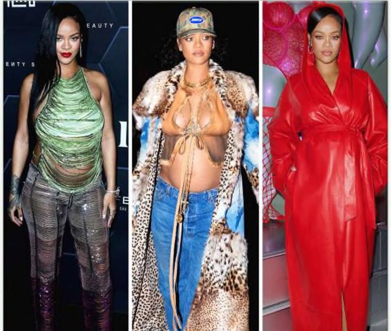

(a sĩ Rihanna suýt phá sản sau khi bội chỉ và kiện cố vấn tài chính của mình. (ố vấn trả lời: “(6 thực sự cần thiết phải nói với cô ấy nếu bạn tiêu tiến vào nhiều thứ, bạn sẽ nhận được những thứ đó chứ không phải tiền?” Bạn có thể cười. Nhưng câu trả lời là, mọi người cần được nói điều đó. Khi háu hết mọi người nói họ muốn trởthành một triệu phú, ý họ thực sự có thể là “Tôi muốn chỉ một triệu đô la”. Và điều đó hoàn toàn ngược lại với việc trở thành một triệu phú. Nhà đầu tư Bill Mann từng viết: “Không có cách nào nhanh hơn để cảm thấy giàu có hơn là tiêu nhiều tiền vào những thứ tưởng như tốt đẹp. Nhưng cách để trở nên giàu có là tiêu tiền bạn có và không tiêu tiền bạn không có. Nó thực sự đơn giản.” Đó là lời khuyên tuyệt vời, nhưng nó có thể không đi đủ xa. Cách duy nhất để trở nên giàu có là không tiêu số tiền bạn có. Đó không chỉ là cách duy nhất để tích lũy tài sản; đó là định nghĩa của sự giàu có. Chúng ta nên cẩn thận để xác định sự khác biệt giữa giàu có thực sự và có vẻ giàu. Nó không chỉlà ngữ nghĩa. Không biết sự khác biệt là một nguồn gốc của vô số quyết định sai về tiền bạc. Giàu có bề ngoài là một khoản thu nhập hiện tại. Một người nào đó lái một chiếc ô tô trị giá 100.000 đô la gần như chắc chắn là giàu có, bởi vì nay cả khi họ mua chiếc xe đó với khoản nợ, bạn cũng cần một mức thu nhập nhất định để đủ tiền trả hàng tháng. Tương tự với những người sống trong những ngôi nhà lớn. Không khó để nhận ra những người giàu có. Họ thường cố gắng làm cho bản thân được biết đến. Nhưng sự giàu có thực sự được che giấu. Đó là thu nhập không được chỉ tiêu. Sự/giàu có là một lựa chọn chưa được thực hiện để mua một thứ gì đó sau này. Giá trị của nó năm ở việc cung cấp cho bạn các tùy chọn, tính linh hoạt và khả năng tăng trưởng để một ngày nào đó có thể mua nhiều thứ hơn bạn có thể ngay bây qiờ.
